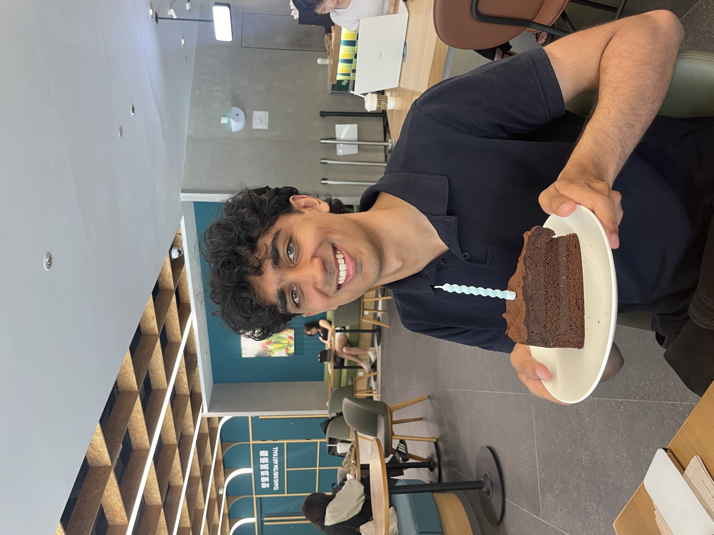
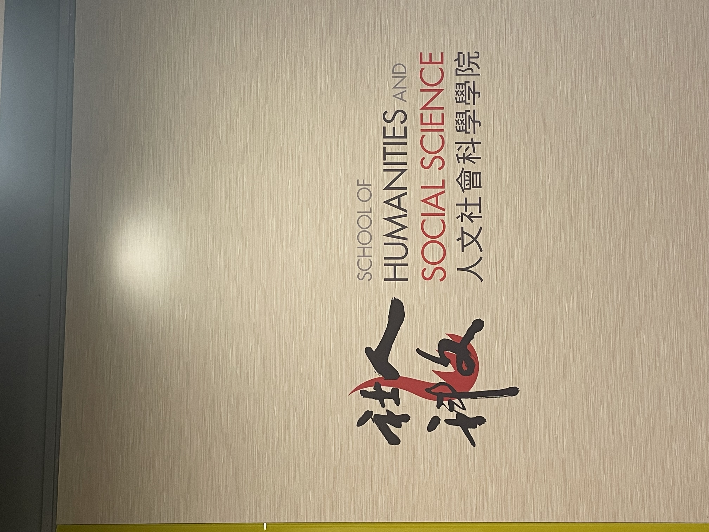
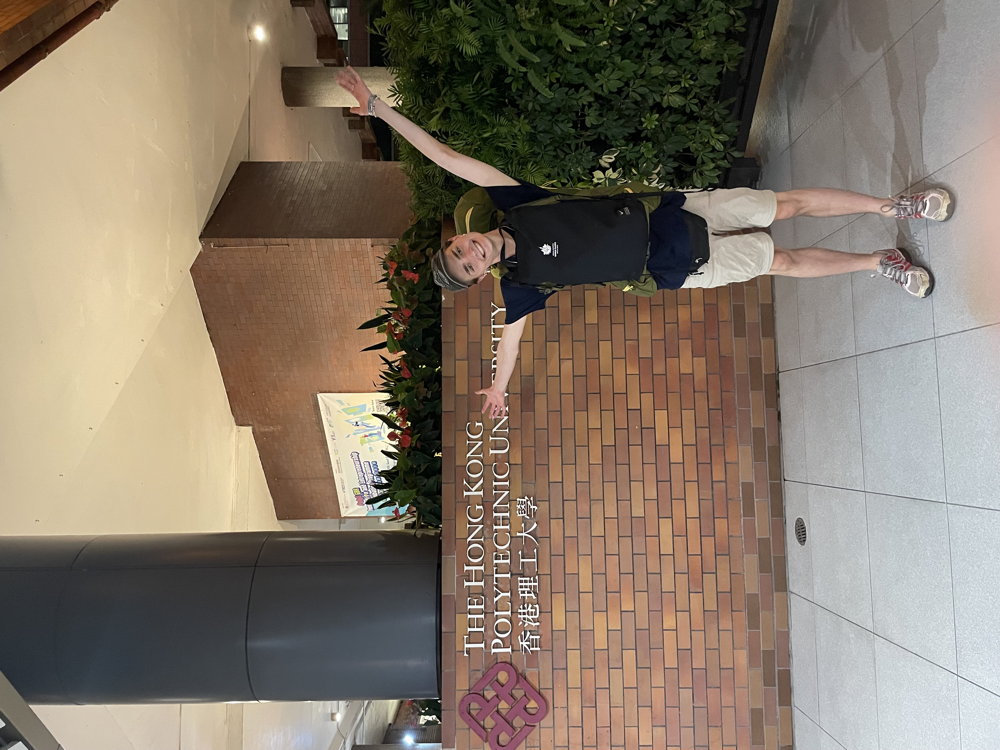
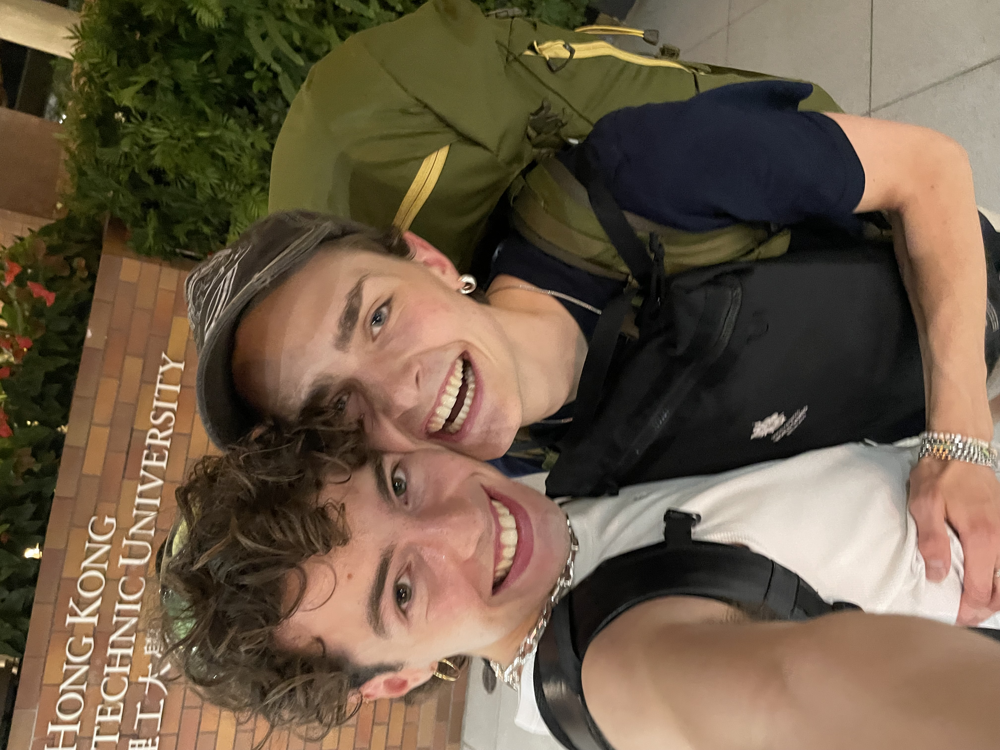
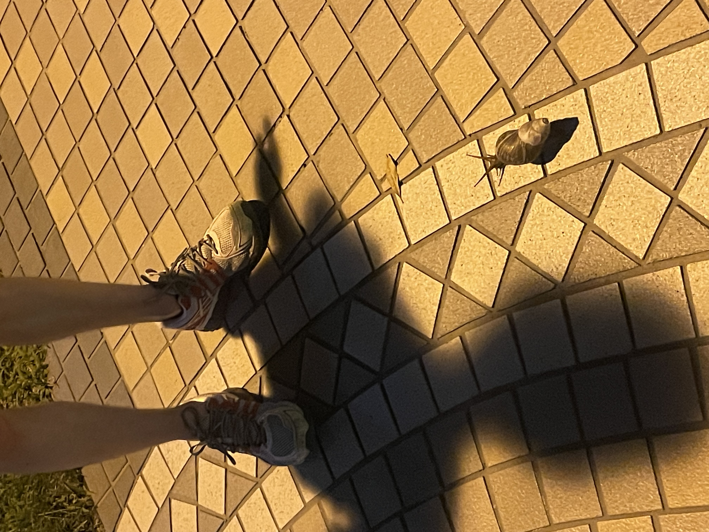

13 Juillet - Hong Kong
Le soleil ardent brûle mes orteils dans mes havailanas et ma peau s’humidifie instantanément lorsque je quitte mon dortoir climatisé. Aujourd’hui c’est l’anniversaire de Farasat, mon colloc. Bougies et marquise au chocolat dans le starbucks du campus.
Puis, direction auditoire 5620. Je me perds dans un dédale de couloirs et d’ascenseurs. Moquette bleue et caractères cantonais, j'ai un peu de retard. Enfin après 20 min je trouve mon chemin. Mon premier cours sur la politique de l’environnement. Nous débattons sur le problème du traitement des déchets à Hong Kong, discussions enflammées sur la question de la taxation des sacs poubelle et des décharges.
17:20, je quitte l’université pour la première fois en bus, enfin j'essaye, c'est un peu compliqué, mon bus n'arrive pas et google maps me perd au milieu des gratte-ciels et des autoroutes.

Finallement, j'arrive à PolyU, l'université de Jakob!
 Je n'ai jamais vu un escargot aussi grand.
 ← Retour